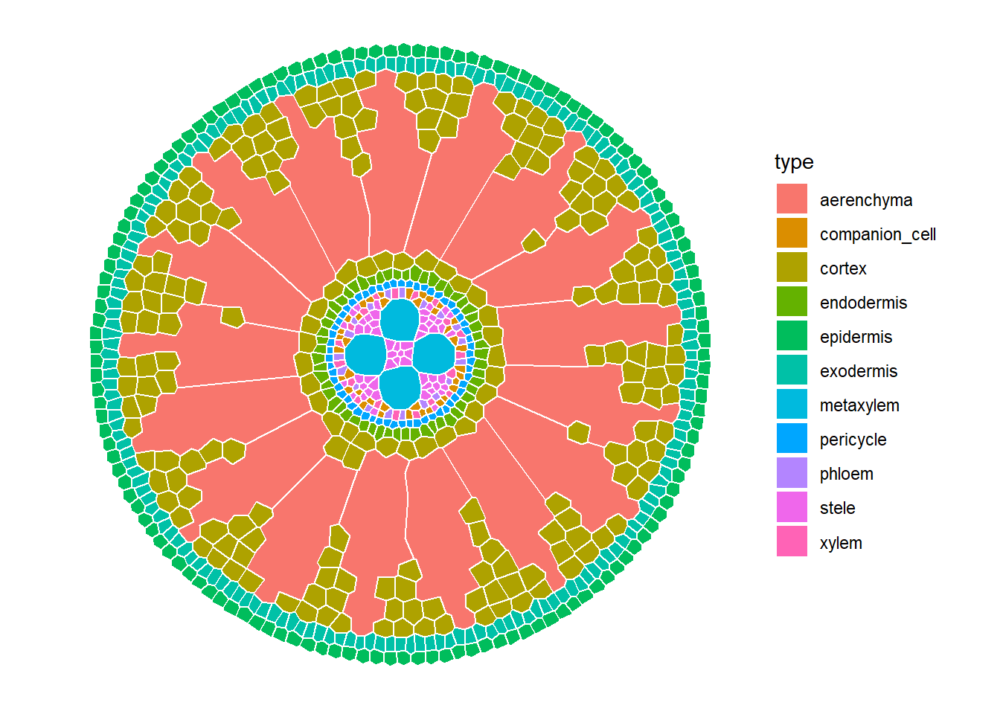
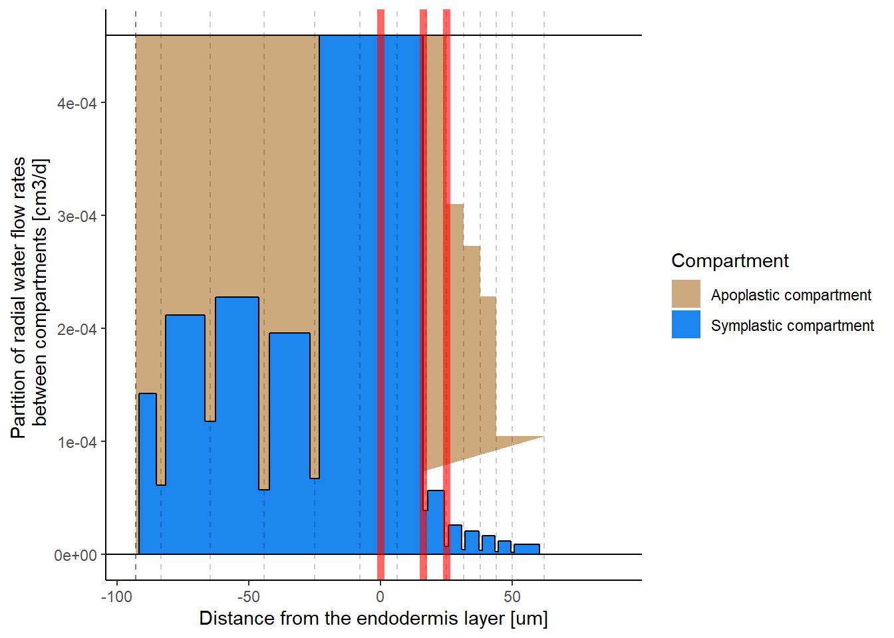
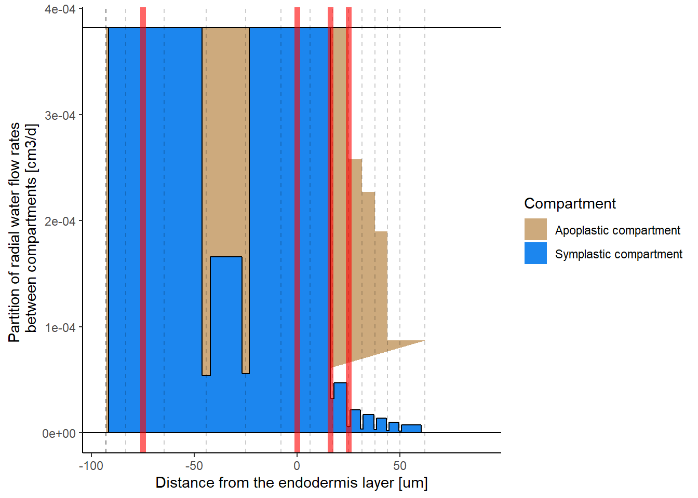

# Load GRANAR with local functions
granar_path <- "../granar/R/"
for(i in list.files(granar_path)){
# print(i)
source(paste0(granar_path, i))
}GRANAR-MECHA USERGUIDE
What is GRANAR?
GRANAR stands for Generator of Root ANAtomy in R. The GRANAR model is able to generate complete cell networks of root cross-sections using a small set of root anatomical parameters These root anatomical features can typically be gathered using software image analysis such as ImageJ (Schneider, Rasband, and Eliceiri 2012). Once the root anatomy is created, the cell network can be saved as an eXtended Markup Language (XML) file. The structure of the XML files created by GRANAR are identical to the ones created by CellSeT (Pound et al. 2012) (a software which digitize root anatomical network).
How to use GRANAR?
Load functions
GRANAR is available as an R package. The ‘granar’ package can be found on GitHub. You can clone the repository with Github desktop and load all functions :
Alternatively, GRANAR can be installed localy by simply executing the following line in the R environment:
install_github("granar/granar")
library(granar)Run GRANAR
To run GRANAR, we use :
- The function read_param_xml() loads parameters from xml files
- The function create_anatomy() generates the virtual cross section with input params
- The function plot_anatomy() displays the generated anatomy
Monocot (wheat)
param1 <- read_param_xml(path = "Params/Wheat_F_Atkinson_2017.xml")
sim1 <- suppressWarnings(create_anatomy(parameters = param1))
plot_anatomy(sim1)Warning: `aes_string()` was deprecated in ggplot2 3.0.0.
ℹ Please use tidy evaluation idioms with `aes()`.
ℹ See also `vignette("ggplot2-in-packages")` for more information.
Primary growth dicot (tomato)
param2 <- read_param_xml(path = "Params/Tomato_primary.xml")
sim2 <- suppressWarnings(create_anatomy(parameters = param2))
plot_anatomy(sim2)
Secondary growth dicot (tomato)
param3 <- read_param_xml(path = "Params/Tomato_secondary.xml")
sim3 <- suppressWarnings(create_anatomy(parameters = param3))
plot_anatomy(sim3)
To save virtual anatomies, we can use the function write_anatomy_xml() :
write_anatomy_xml(sim = sim1, path = "Anatomies/Wheat.xml")
write_anatomy_xml(sim = sim2, path = "Anatomies/Tomato_primary.xml")
write_anatomy_xml(sim = sim3, path = "Anatomies/Tomato_secondary.xml")MECHA
MECHA is the solver of local conductivities (Couvreur 2018)
Set up steps to run it in local :
Open ANACONDA NAVIGATOR
Create a new environment with python 3.7 (in this work it is called GRANAR-MECHA)
conda create -n GRANAR-MECHA python=3.7Load that environment
conda activate GRANAR-MECHAInstall MECHA requirements in the environement :
conda install numpy
conda install scipy
conda install matplotlib
conda install lxml
conda install pip
pip install networkx==1.9.1
By default, MECHA loads the cross section named current_root.xml in the cellsetdata folder, so we need to copy the anatomy we created to that folder ;
anatomy_file <- "Tomato_primary.xml"
file.copy(from = paste0("Anatomies/", anatomy_file),to = "MECHA/cellsetdata/", overwrite = T)
file.rename(paste0("MECHA/cellsetdata/", anatomy_file), "MECHA/cellsetdata/current_root.xml")By default, MECHA can simulate different scenarios : *
B0 : [Special case] No apoplastic barriers
B1 : Endodermal Casparian strip (radial walls)
B2 : Endodermal suberization except at passage cells
B3 : Endodermis full suberization
B4 : Endodermis full suberization and exodermal Casparian strip (radial walls)
B5 : Endo- and exodermal Casparian strips (radial walls)
B6 : Exodermis full suberization and endodermal Casparian strip (radial walls)
B7 : Exodermal Casparian strip (radial walls)
B8 : Endo and exodermal suberization
B9: Lignin Cap and endodermal CS
Here we choose to compute scenarios 1, 3 and 8. You can change the simulated scenarios in MECHA/Projects/granar/in/Maize_Geometry.xml in line 19.
Let’s run MECHA :
# use_condaenv("GRANAR-MECHA")
# sys <- import("sys", convert=T)
unlink("MECHA/Projects/granar/out/Tomato/Root/Project_Test/results/")
try(py_run_file("MECHA/MECHA_example.py"))We can visualise the ratio of symplastiv vs. apoplastic flows for each scenario : nb ; Graphs are broken with Secondary Growth scenario
rp <- "MECHA/Projects/granar/out/Tomato/Root/Project_Test/results/"
Flux1 <- ApoSymp(paste0(rp,"Macro_prop_1,0.txt")) # Endodermal CS
Flux2 <- ApoSymp(paste0(rp,"Macro_prop_3,1.txt")) # Endodermis suberised
Flux3 <- ApoSymp(paste0(rp,"Macro_prop_8,2.txt")) # Exo- and Endodermis fully suberised
plot_water_flux(Flux1, apobar = 1)
plot_water_flux(Flux2, apobar = 2)
plot_water_flux(Flux3, apobar = 3)
We can load radial conductivity \(k_r\) and axial conductance \(K_x\) :
conds <- load_MECHA_out()
pander(conds)| ID | Kx | kr | perimeter |
|---|---|---|---|
| 1 | 0.02385859366092221 | 0.0001254278440673108 | 0.10262259718130115 |
| 2 | 0.02385859366092221 | 4.4759914335687034e-05 | 0.10262259718130115 |
| 3 | 0.02385859366092221 | 3.721398193800901e-05 | 0.10262259718130115 |
References
Pound, Michael P, Andrew P French, Darren M Wells, Malcolm J Bennett, and Tony P Pridmore. 2012. “CellSeT: Novel Software to Extract and Analyze Structured Networks of Plant Cells from Confocal Images.” Plant Cell 24 (4): 1353–61.
Schneider, Caroline A, Wayne S Rasband, and Kevin W Eliceiri. 2012. “NIH Image to ImageJ: 25 Years of Image Analysis.” Nat. Methods 9 (7): 671–75.